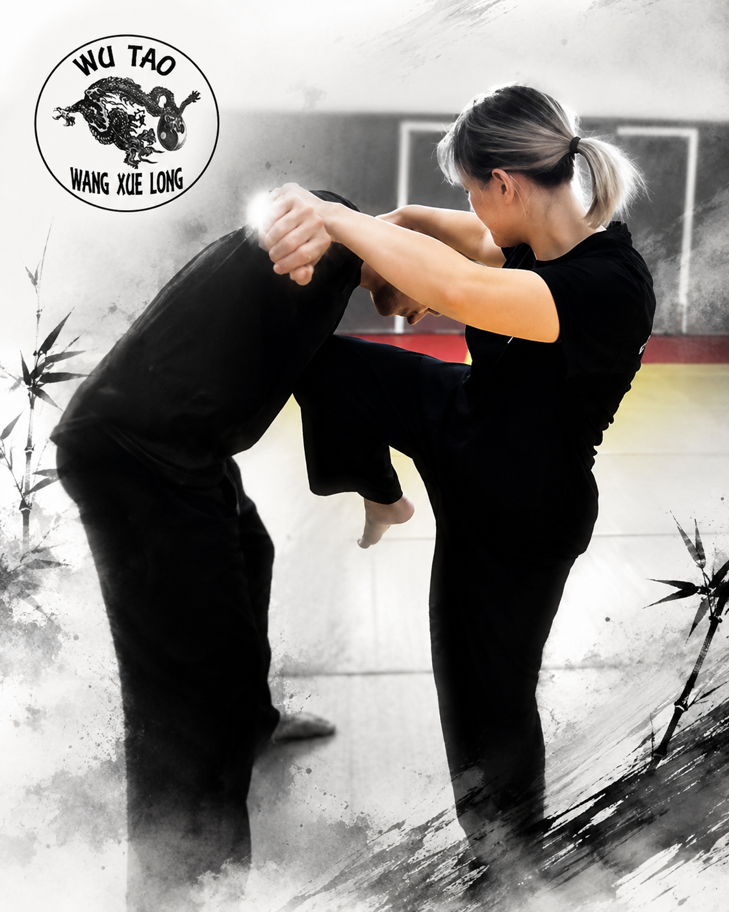

Face au sentiment d’insécurité que certaines femmes peuvent rencontrer dans l’espace public, la self-défense offre des outils concrets pour mieux prévenir une situation à risque, gagner en assurance et pratiquer une activité physique utile. L’objectif n’est pas de rechercher l’affrontement, mais de savoir observer, décider, se protéger et se dégager lorsque cela devient nécessaire.
Qu’est-ce que la self-défense ?
La self-défense n’est pas un sport de combat fondé sur un duel avec des règles, comme la boxe. Elle rassemble des principes et des techniques destinés à éviter une agression, à désamorcer une situation, à se libérer d’une saisie et à créer une possibilité de fuite.
Le travail commence par la posture, la distance de sécurité, la voix, le placement et l’attention à l’environnement. Il se poursuit avec des réponses simples face aux saisies de poignets, aux étranglements, aux agrippements de vêtements, aux poussées ou aux tentatives d’immobilisation.
Les exercices développent aussi la coordination, l’équilibre, la mobilité, le cardio et la capacité à agir malgré le stress.
Pourquoi notre école ?
Le Kung-Fu possède un vaste répertoire de techniques de Chi Na — saisies, contrôles articulaires et dégagements — complété par des frappes courtes et précises. L’instructeur sélectionne les réponses les plus réalistes et les plus faciles à mémoriser pour la défense rapprochée.
La pédagogie privilégie des mouvements courts, efficaces et adaptables à la morphologie de chacune. Les techniques sont répétées progressivement, d’abord lentement puis dans des situations plus dynamiques, avec des protections adaptées.
La pratique ne constitue jamais une incitation à la violence. Elle enseigne au contraire la maîtrise de soi, l’évaluation du danger, la proportion de la réponse et la priorité donnée à la mise en sécurité.
Pourquoi un cours entre femmes ?
Un groupe féminin facilite souvent la mise en confiance, notamment lors des exercices impliquant une saisie, une proximité corporelle ou une situation susceptible de rappeler une expérience désagréable. Chacune peut progresser à son rythme, exprimer ses limites et travailler avec une partenaire rassurante.
Des stages d’immersion peuvent être proposés aux volontaires. Ils permettent de tester les acquis face à des partenaires masculins spécialement équipés de protections et encadrés par l’instructeur. Ces mises en situation restent graduelles, contrôlées et fondées sur le consentement.
Le but n’est pas de « gagner un combat », mais de conserver ses moyens, créer une distance, attirer l’attention et quitter la zone de danger.
Une progression complète
Les cours associent prévention, condition physique, apprentissage technique et mises en situation. Ils abordent notamment la lecture de l’environnement, la communication verbale, les déplacements, les dégagements, les protections, les frappes de diversion, le travail au sol lorsque celui-ci est inévitable et le retour rapide vers une position permettant de fuir.
Principe central : éviter lorsque c’est possible, désamorcer lorsque c’est utile, agir lorsque c’est nécessaire, puis se mettre en sécurité et demander de l’aide.
Les techniques sont enseignées dans un cadre sportif et préventif. Leur usage doit toujours rester nécessaire, proportionné et conforme à la loi.